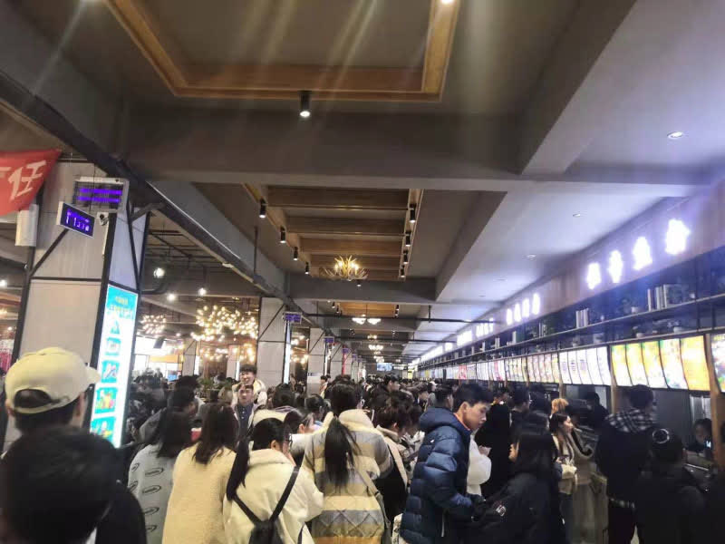
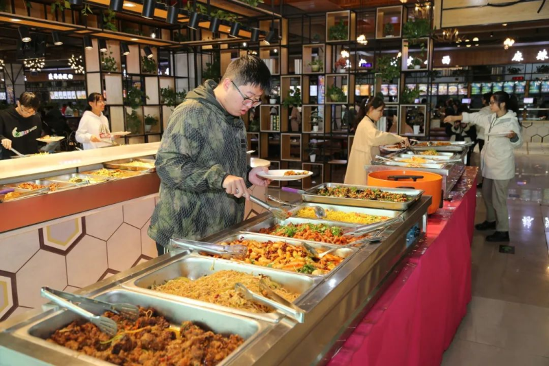
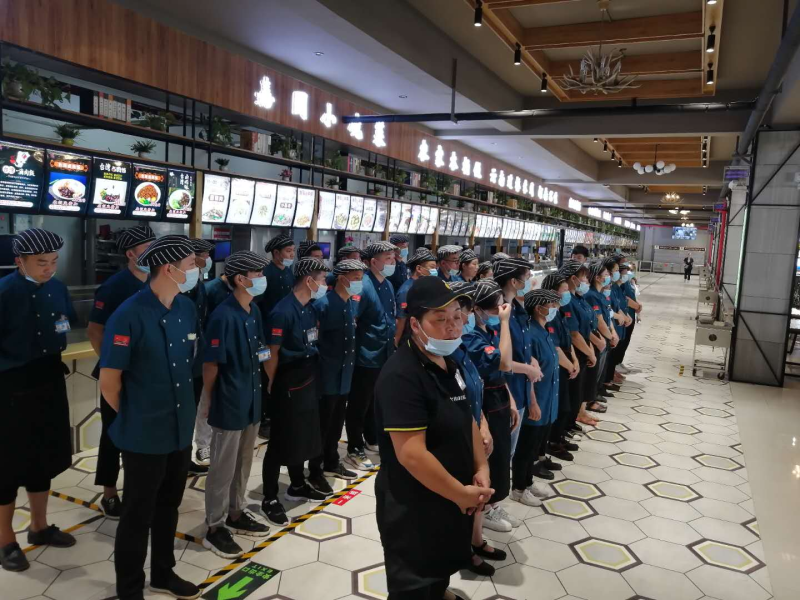

大一新生指南
明德 博学 日新 笃行
报到、军训、放假这些关键节点都在这儿，每天打开看一眼就不会错过。
河南科技大学坐落于"千年帝都、牡丹花城"洛阳，现有开元、西苑两个本科教学校区，占地总面积约4100亩。切换下方标签，看看你将在哪个校区开启大学四年 👇
开元校区(新校区)位于洛阳市洛龙区开元大道263号，是大多数学院本科生所在的主校区，也是亚洲最大单体图书馆的所在地。
开元校区最早建成的宿舍区，12栋公寓楼，毗邻小北门。
最具现代化气息，14-16栋楼，分东街西街，楼下商铺众多。
最新宿舍区，10栋楼六人间，唯一可申请装空调的园区。
西苑校区位于洛阳市涧西区西苑路48号（原洛阳工学院），占地约555亩，是工科传统强院所在地。机电、车辆、软件等学院的新生大多在这里报到。
西苑是工科重镇：机电工程学院、车辆与交通工程学院、农业装备工程学院、软件学院都在这。
被称作"轴承黄埔军校"，馆内陈列各类轴承展品，承载学校机械学科的历史记忆。
以西苑路为界分南北两院，梧桐大道四季皆景，连接南北两院的天桥是经典打卡点。
地处市区繁华地段，紧邻上海市场商圈，公交线路众多，吃喝玩乐下楼就到。
老校区食堂每天 9000+ 同学吃饭，一层 17 个窗口；科大饭堂做豫湘川家常菜，麻辣香锅、刀削面、台湾卤肉饭一应俱全。
六人间 / 八人间上下铺，部分有独卫，干净整洁。老校区生活气息浓，出门就是市区。
开元 / 西苑两个校区都能立体俯瞰——可拖动旋转、调整俯仰角看楼块。在地图上点两个地点，就能规划步行路线，开学第一天再也不怕找不到报到点。
三个宿舍区、三个食堂，加上各种配套设施，让你的大学四年既舒适又有烟火气；别忘了开元小北门正对面的龙翔街，是干饭逛吃的第二战场。

嘉园中部，三层楼，环境装修时尚。招牌：砂锅面、黄焖鸡米饭、口水鸡

菁园北侧，价格最亲民。招牌：大盘鸡面、倔酱面、鸳鸯馄饨

乾园东侧，文艺范爆棚，被赞为"别人家的食堂"。
河科大学子的"第二食堂"！开元大道对面，一条街串起几代学生的青春。百余家小店摊位，边走边吃才是正确打开方式。傍晚到夜里最热闹，人均 20–50 元吃到撑。
一份时间轴从抵达车站起，把报到全过程拉直给你看。带齐清单，按步操作即可。
新生报到期间学校在洛阳高铁龙门站、洛阳北郊机场设有迎新点，志愿者接站并送到宿舍区。
STEP 02到达开元校区后先前往本学院迎新点，登记信息、领取报到证、办理学生证与校园卡。
到财务处缴费窗口或线上支付(学费按各专业公告，住宿费400-1000元/年)。如有困难可在迎新点办理绿色通道缓缴。
凭报到证领取校服、军训服、被褥床品(可自带也可购买)。床品包含被子、褥子、被套、床单、枕头等。
到所在宿舍区(嘉园/菁园/乾园)楼管阿姨处登记，领取宿舍钥匙，找好床位整理行李。先到的舍友说不定已经帮你占好位置了。
军训为期2-3周，洛阳8-9月白天较热，必备：迷彩服(发放)、防晒霜SPF50+、舒适鞋垫2双、水杯、湿巾、晕车药、藿香正气水、一字夹。注意补充水分和盐分。
河科大有数百个学生社团，3大类型校级活动贯穿全年。洛阳本身就是十三朝古都，周边景点和美食足以让四年都逛不完。
挑战杯、互联网+、数学建模、机械创新设计、机器人等竞赛培育地。
了解竞赛详情 →校广播台、大学生艺术团、话剧社、摄影协会、E-show街舞社、动漫社、书法协会。
了解校园文化 →篮球协会、足球协会、羽毛球协会、乒乓球协会、武术协会、跆拳道社、滑板社。
了解体育活动 →青年志愿者协会、爱心社、阳光支教团、红十字会学生分会。
了解志愿活动 →入驻众创空间，对接龙门实验室资源，校级创业孵化器可申请工位和资金。
了解创新创业 →大一新生通用招新方式：先报名再笔试面试，先做一年干事锻炼组织能力。
了解学生会 →世界文化遗产，距学校公交半小时。北魏至宋凿建10万余尊佛像。卢舍那大佛17米高，必看。
查看百科 →中国第一古刹，佛教传入中国后建的第一座官办寺院。千年银杏与古塔值得慢游。
查看百科 →古城门+老街，小吃云集。不翻汤、浆面条、洛阳水席一条街，晚餐后夜游绝佳。
查看百科 →新建仿古文旅区，夜景灯火璀璨，适合汉服拍照打卡。门票免费但需预约。
查看百科 →含应天门、明堂、天堂三大复原建筑。武则天时期皇宫旧址，IMAX级历史沉浸感。
查看百科 →共24道菜，热汤菜为主。必尝燕菜(牡丹燕菜)、连汤肉片、焦炸丸子、假海参。
查看百科 →这是 2026 级新生的专属墙——填上你的学院、专业、家乡和一句宣言，生成你的「新生身份卡」并上墙。看看有没有同专业、同乡、同星座的缘分同学就在你旁边 👀
学长给新生埋了一整面互动彩蛋墙：运势卡想抽几次抽几次、纠结今天吃啥就摇个食堂盲盒、测测你是哪种「鼎宝」、写个心愿投进洛河。玩够了再去「新生墙」认领身份卡、把右下角「弹幕」打开给学弟学妹留句话 🎉
想抽几次抽几次，抽到满意为止 🎲
纠结症福音：摇出你今天的食堂盲盒
4 道题，测出你的新生人设
写下一个愿望投进洛河，再捞一个学长学姐的心愿
先别急着翻，这几个入口是学长觉得你最可能用到的：